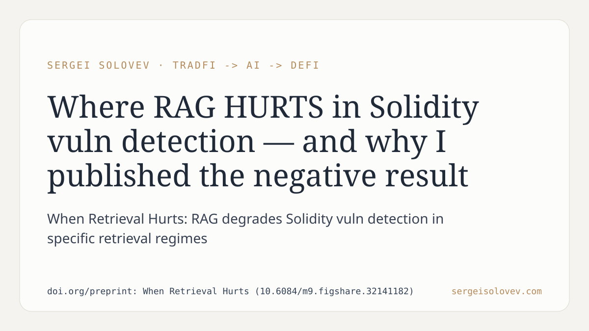

A pattern I keep seeing in AI-assisted smart contract auditing: retrieval-augmented generation gets treated as a default upgrade, as if adding a retrieval step is always net positive. The assumption is rarely tested against the failure regime.
This paper does exactly that — it identifies the conditions under which retrieval hurts rather than helps Solidity vulnerability detection. The finding is not that RAG is bad in general; it is that there are specific retrieval regimes where the mechanism actively degrades detection quality compared to a non-retrieval baseline. That distinction matters because most published benchmarks in this space report only the configurations where retrieval wins.
In practice, this has a direct consequence for anyone building or procuring AI security tooling: a system that performs well on average may quietly underperform on the subset of vulnerabilities where retrieval misfires. If you are not testing the degradation regime, you do not know your actual floor.
Publishing a negative result here is not modesty — it is the only way to give practitioners an honest calibration point. A tool that tells you only where it succeeds is a marketing document.
Paper: https://doi.org/preprint: When Retrieval Hurts (10.6084/m9.figshare.32141182)
#RAG #SmartContracts #AIagents